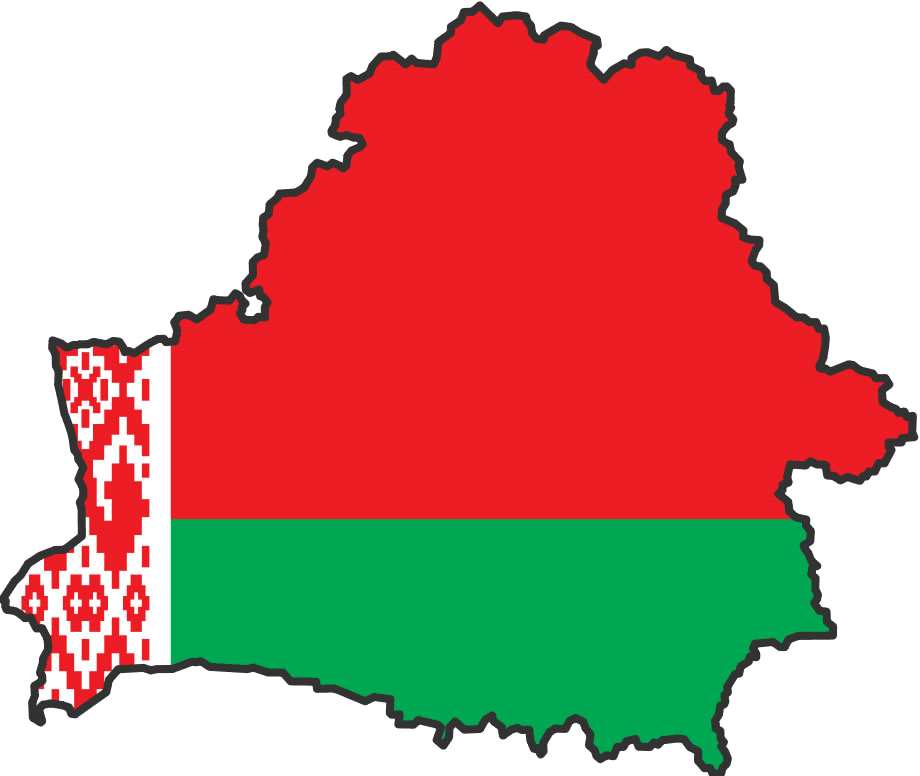
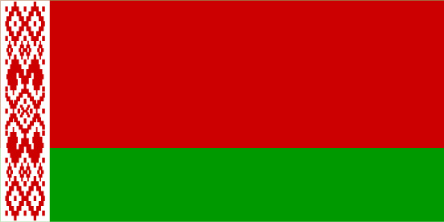
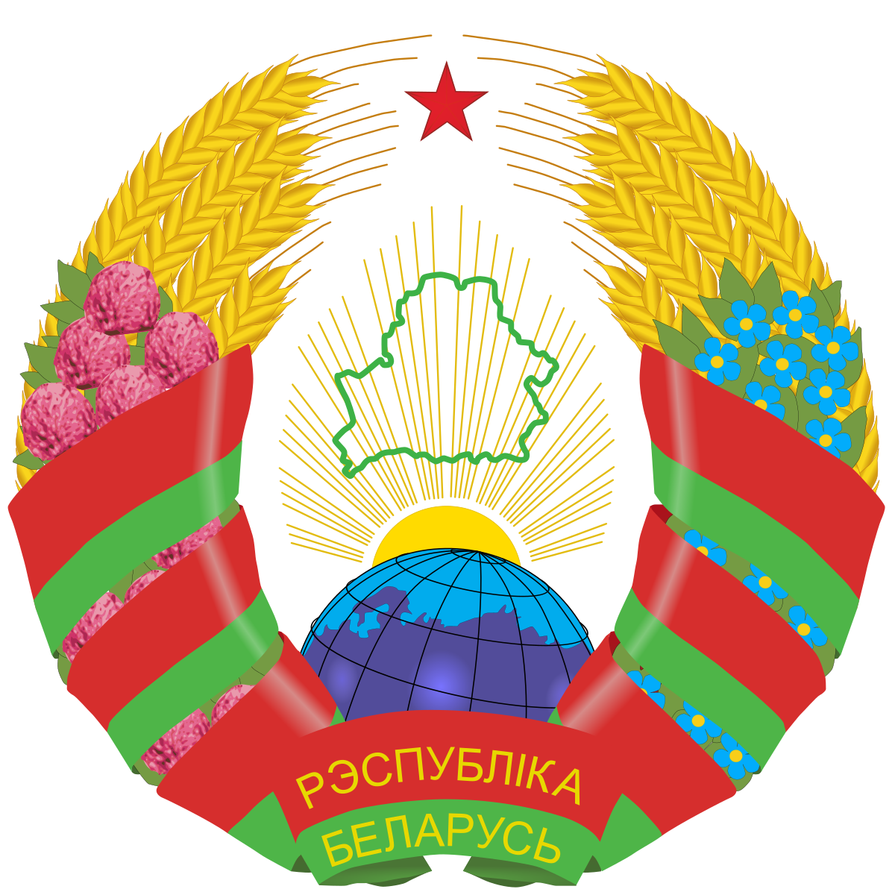

Home
Belarus

Location
The capital of Belarus is Minsk. Belarus borders on five countries (Russia, Ukraine, Lithuania, Latvia, Poland) and is located in the center of Europe.Belarus consists of six districts: Brest, Gomel, Minsk, Grodno, Vitebsk and Mogilev. The area of Belarus is 207 595 km. Most of Belarus consists of forests, rivers and reserves.

Flag of Belarus
The red color on our flag is the color of the victorious standards of the Grunwald victory of the Belarusian regiments over the crusaders. This is the color of the banners of the Red Army divisions and the Belarusian partisan brigades that liberated our land from the Nazi occupiers and their minions. The green color embodies hope, spring and rebirth; it is the color of our forests and fields. White color is the embodiment of spiritual purity. The flag’s ornament was used the symbols of agriculture - rhombuses, the oldest graphic variations of which are known to archaeologists from finds in the Republic of Belarus.
